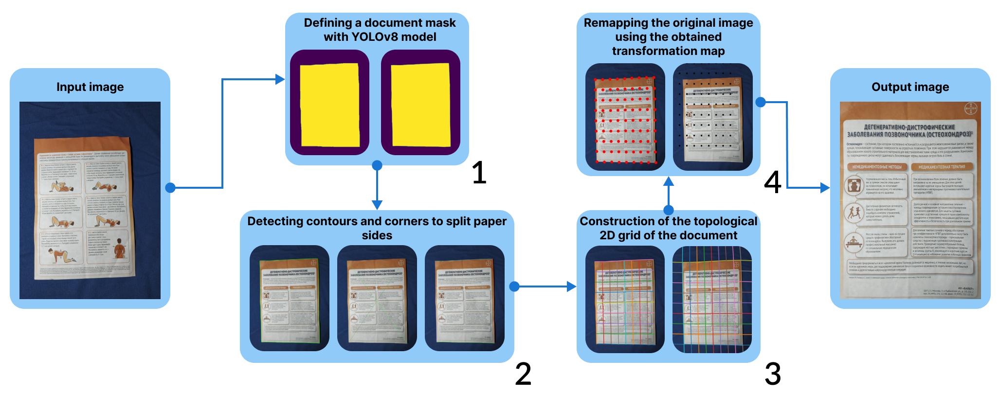
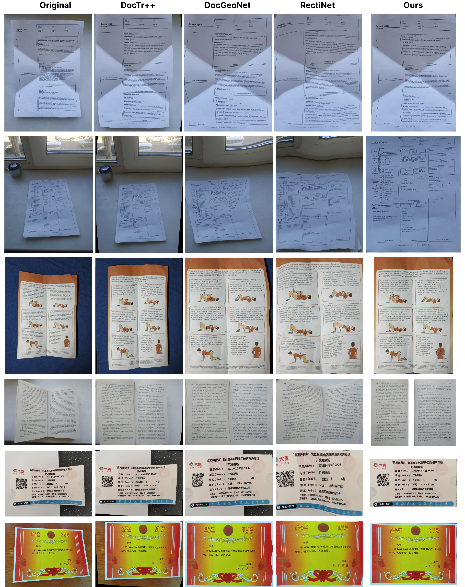

Geometry Restoration and Dewarping of Camera-Captured Document Images
Valery Istomin1,
Oleg Perezyabov2 and
Ilya Afanasyev3,4
1Shuya Branch of the Ivanovo State University, Shuya, Russia
2BIA Technologies, St. Petersburg, Russia
3Saint Petersburg Electrotechnical University "LETI", St. Petersburg, Russia
4Innopolis University, Innopolis, Russia


This research focuses on developing a method for restoring the topology of digital images of paper documents captured by a camera, using algorithms for detection, segmentation, geometry restoration, and dewarping. Our methodology employs deep learning (DL) for document outline detection, followed by computer vision (CV) to create a topological 2D grid using cubic polynomial interpolation and correct nonlinear distortions by remapping the image. Using classical CV methods makes the document topology restoration process more efficient and faster, as it requires significantly fewer computational resources and memory. We developed a new pipeline for automatic document dewarping and reconstruction, along with a framework and annotated dataset to demonstrate its efficiency. Our experiments confirm the promise of our methodology and its superiority over existing benchmarks (including mobile apps and popular DL solutions, such as RectiNet, DocGeoNet, and DocTr++) both visually and in terms of document readability via Optical Character Recognition (OCR) and geometry restoration metrics. This paves the way for creating high-quality digital copies of paper documents and enhancing the efficiency of OCR systems.
Keywords: Document Image Dewarping, Image Distortions, Geometry Restoration

The flowchart of the document geometry restoration and dewarping algorithm:
1) Identifying the document mask using the YOLOv8 model;
2) Detecting the contour edges of the document, approximating the corners, and segmenting the contour into fragments corresponding to each side of the document;
3) Creating a 2D grid of the document by interpolating its opposite sides with evenly spaced curved lines, approximating each line with a cubic polynomial;
4) Detecting the intersection points of the curved lines, constructing the resulting grid for image transformation, and creating a transformation map based on the 2D points, followed by remapping the original image.

The comparison of documents reconstructed by popular desktop DL models - DocTr++, DocGeoNet, RectiNet and our algorithm.
Citation
@article{istomin2025geometry,
title={Geometry Restoration and Dewarping of Camera-Captured Document Images},
author={Istomin, Valery and Pereziabov, Oleg and Afanasyev, Ilya},
journal={arXiv preprint arXiv:2501.03145},
year={2025}
}